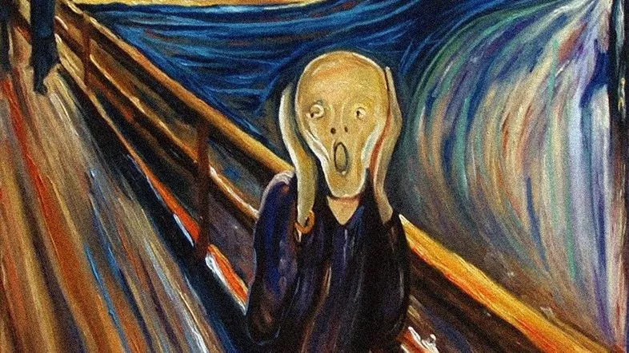

L'urlo di Munch è una delle opere pi+ famose della storia.
L'urlo raffigura un sentiero in salita su una collina sopra la città di Oslo.
Nel quadro la cosa che spicca è "L'uomo" che urla al centro, è un urlo lancinante, il soggetto si comprime la testa con le mani quasi a perdere la forma, tanto che sembra di non vedere un uomo ma un ectoplasma.
 Se vuoi tornare alla home clicca qui